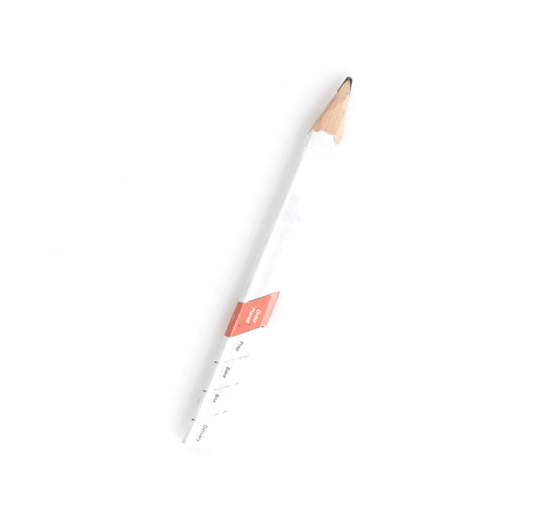
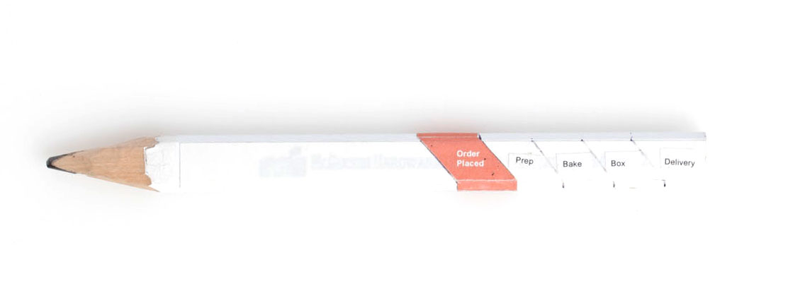

Digital food ordering can feel pretty automated and disconnected from informality of home delivery. What if we reimagine our interaction with technology during ordering process and make it as spontaneous and informal as sketching on a napkin.
3D Pizza Drawing turns your pizza drawing into an instant order. Completing a simple drawing of a pizza with the 3D Pizza Drawing places an order for your favorite pizza. When the drawing is finished, the pencil body turns into a pizza tracker visualizing status of your order.
